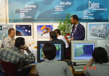

|
 (26.05.03)
4 Haziran'da Ceylan Intercontinental Oteli'nde gerçekleþtirilecek
PLM / CATIA Günü'nde firmamýz "CATIA V5 ile tersine mühendislik
uygulamalarý" konulu bir sunum yapacak (26.05.03)
4 Haziran'da Ceylan Intercontinental Oteli'nde gerçekleþtirilecek
PLM / CATIA Günü'nde firmamýz "CATIA V5 ile tersine mühendislik
uygulamalarý" konulu bir sunum yapacak
www.cadem.com.tr/haber/catia-gunu-2003.html
(21.05.03)
Cadem, 20 Mayýs günü Yýldýz Teknik Üniv. Makine Müh. Bölümü'nde
3D sayýsallaþtýrma ve tersine mühendislik uygulamalarý konusunda
bir seminer düzenledi
www.cadem.com.tr/haber/ytu-re-seminer.html
(19.05.03)
Firmamýz, 17 Mayýs Cumartesi günü Selçuk Üniv. tarafýndan
Konya Hilton Oteli'nde düzenlenen, Bilim kurgudan gerçeðe...
'Saðlýk Sektöründe Bilgisayar Destekli Tasarým ve Uygulama
Örnekleri' konulu panel ve sergiye katýldý
www.cadem.com.tr/haber/su-panel.html
(12.05.03)
Dün sona eren SUBCONÝST 2003 Uluslararasý Yan Sanayi Ürünleri
Fuarý'nda Cadem standýnda sergilenen geliþmiþ tasarým ve imalat
teknolojilerine yan sanayiciler büyük ilgi gösterdi
www.cadem.com.tr/haber/subconist2003-yapildi.html
(27.04.03)
25- 26 Nisan tarihlerinde Bursa'da düzenlenen "Uluslararasý
Rekabette Kalite ve Baþarý" temalý 1. Kalite ve Baþarý
Sempozyumu Fuarý'nda Cadem A.Þ. olarak 14 nolu standta yer
aldýk
www.cadem.com.tr/haber/kalite-fuari.html
(25.04.03)
Mimics ve FreeForm yardýmýyla, kulak-burun vs. için protez
uygulamalarý Maastricht Üniv. Hastanesi'nde daha hýzlý ve
baþarýlý yapýlýyor
www.cadem.com.tr/haber/kulak-protezi.html
(11.04.03)
10 Nisan'da Eskiþehir Anadolu Üniv.'sinde düzenlediðimiz "Dijital
Kil" (FreeForm modelleme sistemi) tanýtým seminerimize
yoðun ilgi gösterildi
www.cadem.com.tr/haber/au-dijital-kil.html
(10.04.03)
3D Systems, kuyumculuk uygulamalarý için Viper si2 de kullanýlmak
üzere yüksek hassasiyetli yeni bir fotopolimer reçineyi Ýsviçre'deki
BASELWORLD Mücevher Fuarý'nda duyurdu
www.cadem.com.tr/haber/3d-systems-viper-highres-resin.html
(10.04.03)
3D Systems/ ThermoJet 3D yazýcýsý, Almanya'nýn Selb Þehrinde
bulunan Seramik ve Endüstriyel Tasarým Teknik Okulu'nda baþarýyla
kullanýlýyor
www.cadem.com.tr/haber/3d-systems-thermojet-ceramics.html
Ýrtibat:
Cadem CAD/CAM Destek Merkezi A.Þ.
www.cadem.com.tr
Metropol Center 32/52 Merter / Ýstanbul
Tel: (212) 481 75 09
|